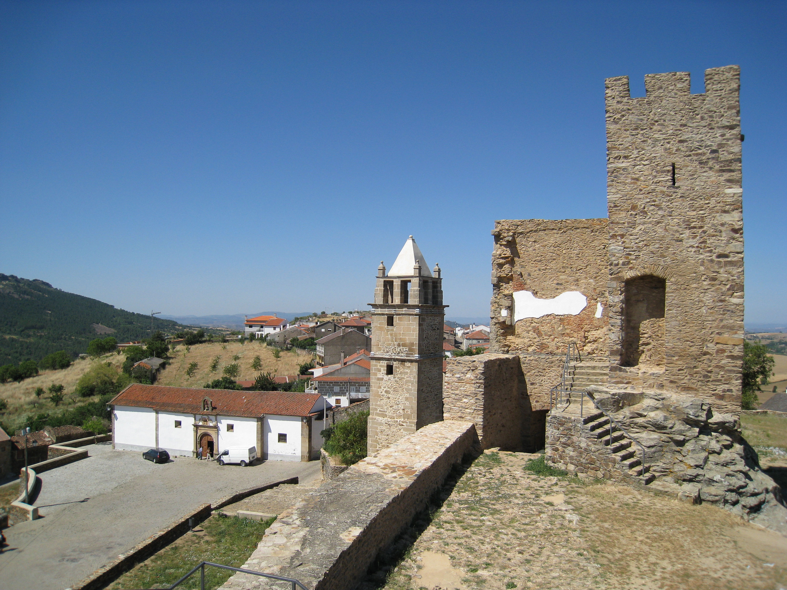
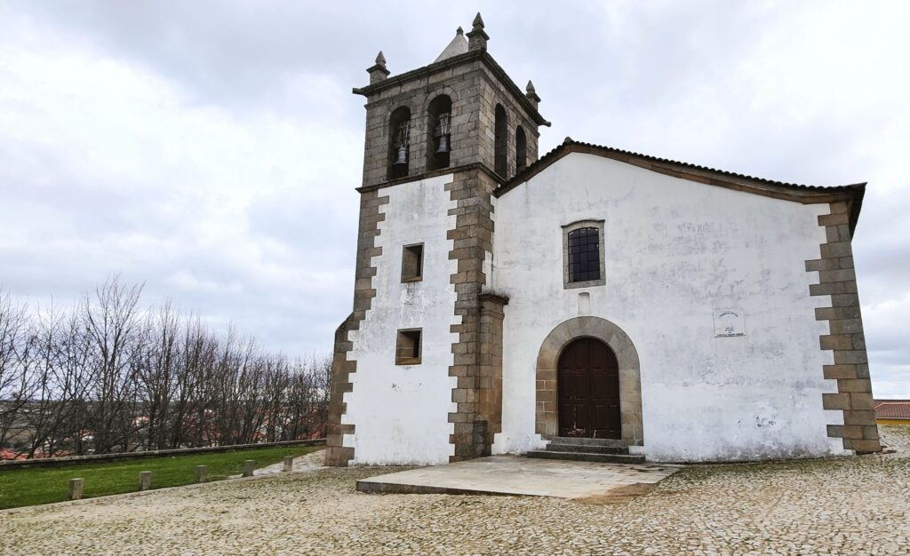
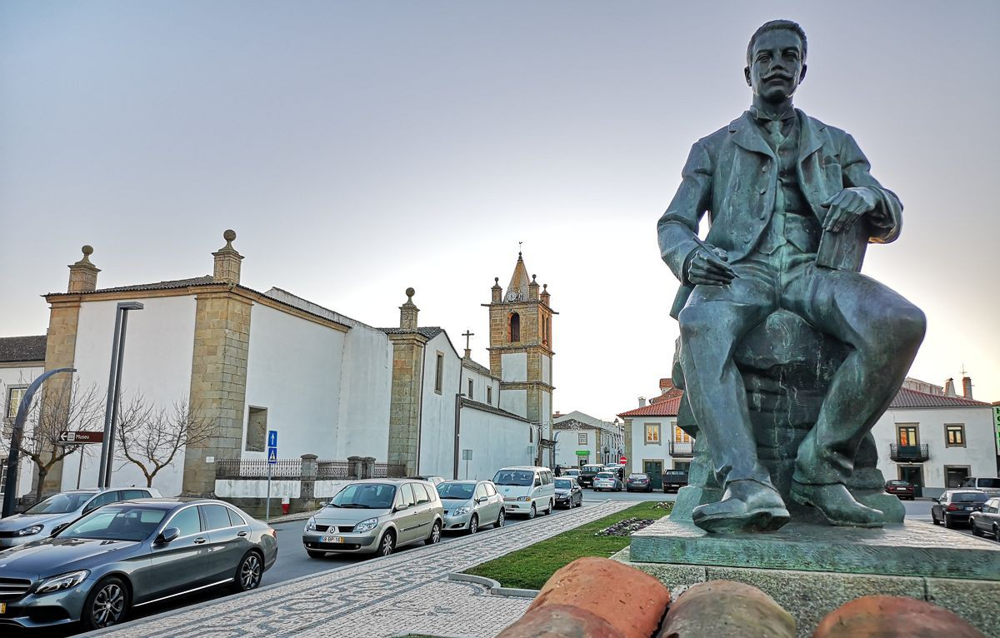

A minha cidade em imagens, vídeo e poesia
Nesta página apresento um pouco mais sobre Mogadouro através de fotografias, vídeo e poesia.
Fotografias


Vídeo
Poesia
Mogadouro, vila de granito e sol,
Guardas nas pedras a história a arder,
O Sabor corre manso ao teu redor,
E a serra vela o teu amanhecer.
Nas ruas antigas ecoa o passado,
Nordeste bravo, terra de raiz funda,
Em cada canto um tempo é guardado,
Mogadouro, memória que perdura.

Há terras que se leem como livros, e esta tem o seu escritor à porta.